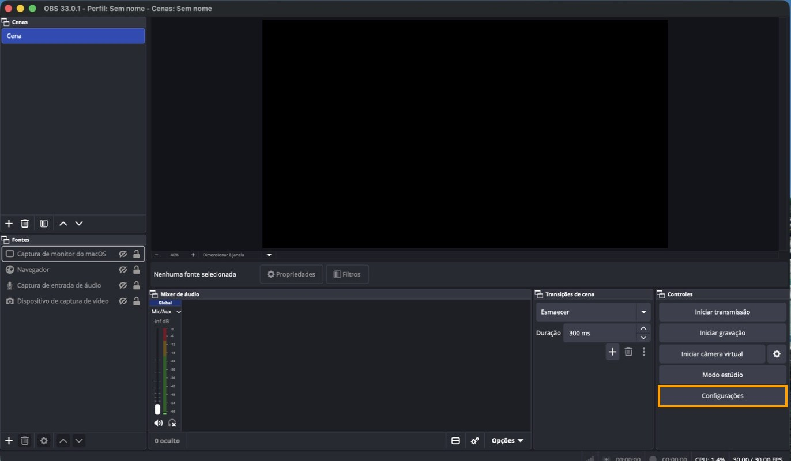
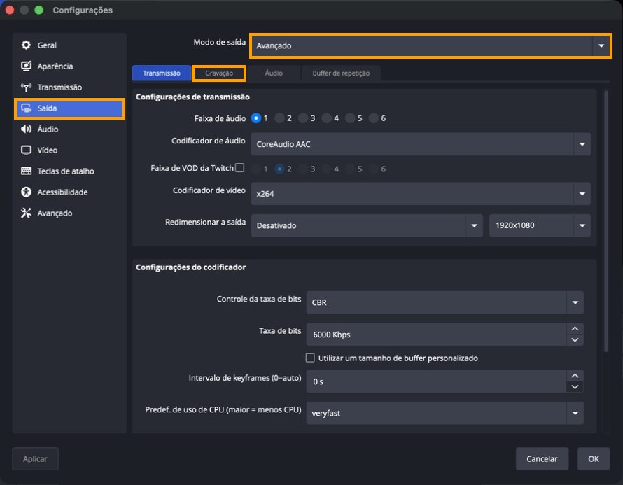
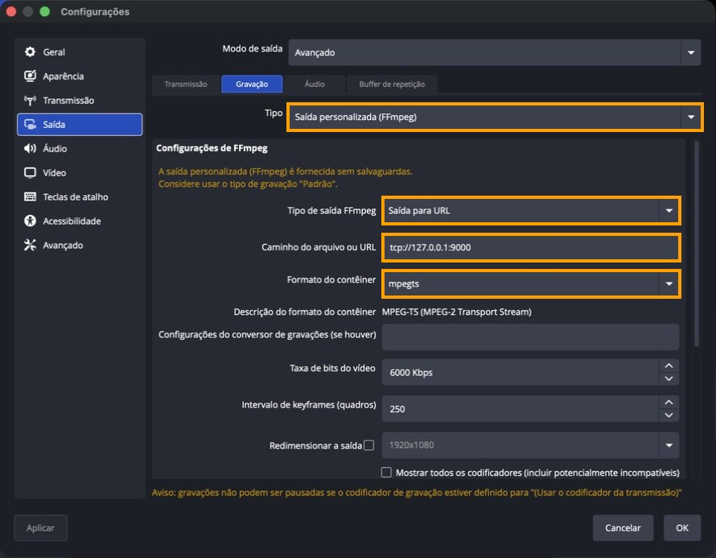

Como configurar.
O Camera Sync recebe o áudio da live pelo Wi-Fi, direto do computador da transmissão, com o programa gratuito Camera Sync Link (Mac e Windows). Não precisa instalar mais nada.
Passo 1. Instale o Camera Sync Link
Baixe o programa na seção Download (Mac ou Windows), instale e abra.
No Windows, se aparecer “O Windows protegeu o computador”, clique em Mais informações e depois em Executar assim mesmo. Quando o computador pedir permissão de rede ou de microfone, permita.
Passo 2. Escolha de onde vem o áudio
OBS
No Link, em Origem, escolha OBS. No OBS, abra Configurações.

Em Saída, mude o Modo de saída para Avançado e abra a aba Gravação.

Em Tipo, escolha Saída personalizada (FFmpeg). Use Saída para URL, com o caminho tcp://127.0.0.1:9000 e o formato do contêiner mpegts.

Clique em Iniciar no Link e depois em Iniciar gravação no OBS.
vMix
No Link, em Origem, escolha vMix. No vMix, abra Stream e use Custom RTMP Server, com a URL rtmp://127.0.0.1:1935/live e a chave audio. Clique em Iniciar no Link e depois em Start no vMix.
Mesa de som ou placa de áudio
No OBS, em Configurações, Saída e Gravação, escolha Saída personalizada (FFmpeg). Use Saída para URL, com o caminho tcp://127.0.0.1:9000 e o formato mpegts.
Passo 3. Conecte o iPhone
No Camera Sync, vá em Ajustes e depois em Áudio da rede local.
Digite o endereço que aparece no Link (exemplo: 192.168.0.10:8765) e toque em Conectar. O iPhone e o computador precisam estar na mesma rede Wi-Fi.
Quando o som estiver chegando, a cápsula Áudio da live na câmera fica verde.
Passo 4. Grave
Grave como sempre, com o microfone do iPhone ligado, mesmo que baixo. Ao parar, o vídeo sincroniza sozinho com o áudio da live.
Teste antes de transmitir
Escolha Chiado de teste no Link e ligue Ouvir no computador. Grave um vídeo curto com o iPhone perto do computador e sincronize. Assim você confirma a conexão antes de começar a live.